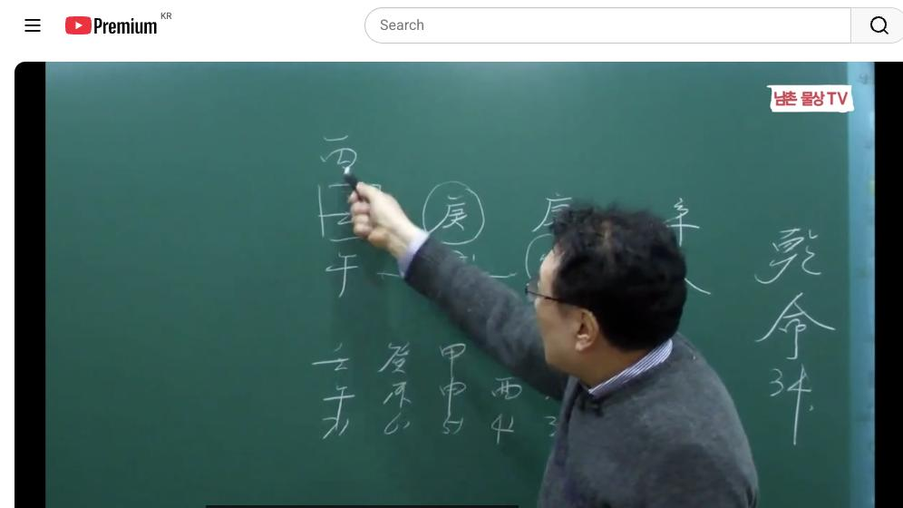
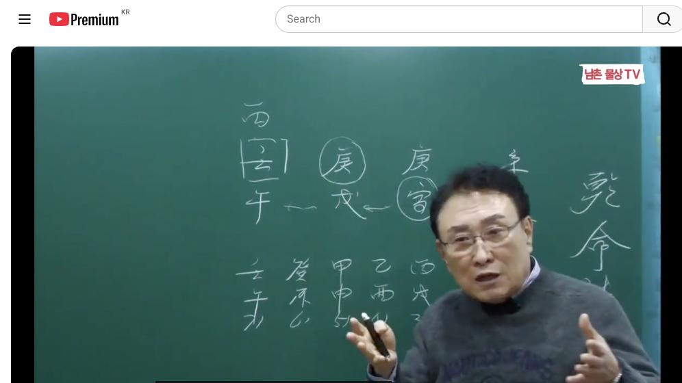
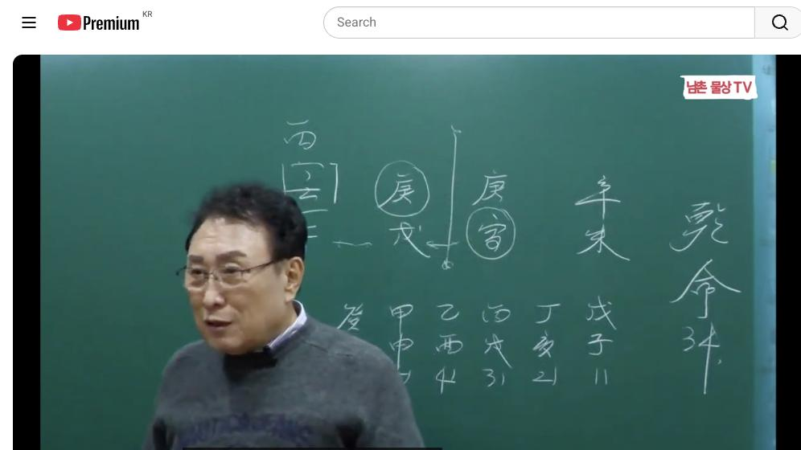

남촌물상TV 전체 문서 › 동영상 V0049
[실전사례]19 양띠 경금 일간 부모의 덕으로 키워 낸 성공 스토리 상담문의 : 010-3139-6645

| 문서 번호 | V0049 (동영상) |
|---|---|
| 영상 URL | https://www.youtube.com/watch?v=N9Nu8Na7MmM |
| 영상 ID | N9Nu8Na7MmM |
| 게시일 | 2024-02-15 |
| 길이 | 20:38 (1238초) |
| 조회수 | 691회 (수집 시점 기준) |
| 카테고리 | Howto & Style |
| 자막 | ko (자동생성) |
| 수집 시각 | 2026-08-30 17:03 (KST) |
영상 설명 (YouTube 설명 원문 그대로)
양띠 경금 일간 부모의 덕으로 키워 낸 성공 스토리 #실전사례 #경금일간 #성공
전체 자막 (439구간 · 타임스탬프 클릭 시 해당 장면으로 이동)
[0:01][음악]
[0:07]자 우리 이제 밴드에 올린 사주를
[0:10]풀라 풀라고 그렇게 사냥해도 안 풀어
[0:12]그래서 대가 이걸 올려야 되냐 말해야
[0:15]되냐 해서 궁금도 하고 근데 저는
[0:19]이렇게 열심히 해주라고 여러분들이 안
[0:21]한 거 같아 그래서 앞으로 밴들 안
[0:23]올려볼까 생각도
[0:26]합니다 자 지금
[0:29]이저 가 잘 보시면 공부할 수 있는
[0:33]자료가 굉장히
[0:35]많아요 자 심미 경인 경술 이모다
[0:40]그럼 이런 사주들이 보면 다 금으로만
[0:42]구성돼 있고 이게 어떻게 설명을 할
[0:45]것인가를 굉장히 어렵게 볼 수가
[0:48]있어요 그러나 우리 물상론 쉽게 가장
[0:52]쉽게 푸는 방법도 많습니다 그
[0:54]고전으로 보면은 당시 뭐 뭐가 투출
[0:58]있으니까 어쩌고 이렇게 해서 히어 하
[1:01]있 가장 쉬운 방법으로 한번 풀어보자
[1:05]말입니다 항시 이제이 금이라는 것은
[1:09]특성이 있잖아요 근데이 경금의 특성은
[1:13]우리가 뭐라고 했어요
[1:15]첫째 돈을 좋아한다 그 당연히 돈을
[1:19]좋아합니다 그건 확실하고요 맺는 말
[1:23]확실하고 돈을 한다 이게 리 그
[1:27]경일인데 근 사람들이 칼이 자료가
[1:32]없거나 있는 사람들이 보면은 칼
[1:35]자료가 있고 쓰는 사람 경호하고 없을
[1:37]싸는 사람 굉장히 차이가 있어요
[1:40]그러니까 경금 붙어져 있는 사람들
[1:42]경우는 대부분이 어떤 권력을 잡으면
[1:46]굉장히 난폭한 스타일을 가질 수
[1:48]있는게 그런 성격을 갖게 돼요 근데
[1:51]이제 그이 사주 구성에 따라
[1:53]다르겠지만 이제 그런 이미지를 가지고
[1:56]생각하는게 좋다 그 말이에요 우리가
[1:59]대통령은 누구예요 경 자 경금일주
[2:02]근데 이제 경금 일주가 칼 자루가
[2:05]하면 어떻게 할까요 칼 자루가 흔들려
[2:08]가겠지 내년에 경인년 저 뭐야 갑진년
[2:11]올해 갑진년 아니에요 올해는 한번 자
[2:13]흔들어 볼 거예요 이게 여러분들이
[2:16]지켜보고 실관 해서 맞는가 안
[2:18]맞는거는 여러분들이 더 이해하시면
[2:20]된다 그러니까 작년을 계사년에
[2:24]대통령이 그래도 수능 하고 갔다 근데
[2:27]올해 갑진 년에는 야 너들 말이야
[2:30]내가 한번 볼래 한번 봐봐라이
[2:33]스타일로 뭔가를 갈 수 있다라고 본다
[2:35]그 말이에요 그것은 칼없는 칼자루가
[2:38]제대로 생긴다고 했을 때 그런 역할을
[2:41]하게 된 가는 우리가 공부하면서 직접
[2:44]한번 느껴본게 좋다 한번 두어
[2:48]봅시다 자 그러면은이 사주에 가장
[2:51]좋은 것이 뭐냐면 그은 어디서 기
[2:54]좋아해 물 근데 이렇게 물이 물이
[2:58]수라는 물이 있습니다이 사람 사주
[3:01]이거 없으면 빵점이야이 사람 이거
[3:03]하나 때문에 모든 일이 굉장히 아주
[3:07]잘 풀린 사주가 된다 그 말입니다
[3:10]그리고 이런 사람들은 가만히 있어도
[3:13]나중에 정치를 누가게 하게 돼요 지금
[3:17]지금은 전혀 생각이 없다 그러는데
[3:19]시간이 지나면 누가 하든지 아 정치
[3:22]좀 해 봐 뭐 해 봐 이렇게 얘기를
[3:24]하게 됩니다 왜 그러냐고
[3:27]보면은이 부모는 정치하는 걸 부모야
[3:31]왜 그러냐 여기 부모 자리에 재물
[3:35]있죠 보이지 않는 부모 자리에 재가
[3:38]있기 때문에 이렇게 호수로 돼 있어
[3:41]이렇게 그렇죠 호수로 돼 있단
[3:43]말이에요 자 내가 호술 할 테니
[3:46]여기에 태양이 한번 떠 볼래 그러면
[3:49]우리는 이제 호숙이 되면 밝아진게
[3:51]태양이 뜨죠 자 그럼 여기서 한 번
[3:55]더 태양이 임수에 뜨는 걸 좋아한다
[3:58]합을 좋아한다 이런 걸 구별을
[4:00]여러분들 할 줄 으야 돼요 제가 항시
[4:02]강의할 때 뭐냐면 임수 저 어 병화는
[4:05]임수의 뜨기를 좋아해 합이
[4:08]우선이야 이런 얘기를 굉장히 많이
[4:09]했잖아요 그러 이럴 때 혼란스러운
[4:12]거야 자 여기에서 태양이 뜬다 화장을
[4:15]하면은 여기 병화 뜬다 가자 하면은
[4:18]자 뜬다
[4:20]하면 여기에서 먼저 뜰래 여기서 뭐
[4:25]할래요 그거 그거지 해 보셨어요 어
[4:29]그러니까 이제 이런 것을 보시고
[4:31]여러분들이 잘 아셔야 된다
[4:34]그러면 그 말은 뭐냐면
[4:37]항시 뿌리를
[4:40]찾아라 미토가 그 병화의 뿌리에요
[4:44]오화가 뿌리에요 오화가
[5:00]을 여러 정리해드리는
[5:02]거예요 그래서 그러면 만약에 본인이
[5:07]러서 병화가 떴다는 얘기는 물위에
[5:10]뜨는 것이 우선이죠 그자 물위에
[5:12]뜨니까 누가 빛나 내가 빛나지 이게
[5:15]된단 말이에요 그 내가 빛나는 것은
[5:17]소위 명예를 추구하는 쪽이 와
[5:20]있구나라고 이해하시면 좋다 얼마나
[5:23]명쾌한 답이에요
[5:24]그래서가장 쉬운 방법으로 여러분들이
[5:27]사주 보실 때 아 너는 어 으로
[5:30]가겠다는 것을 쉽게 알 수가
[5:32]있잖아요 자
[5:35]그런데 만약에 평화 같은 임수에
[5:38]뜬다이 말이에요 여기 평신 합을
[5:40]우성이다 그러면은 만약에 물이 없었다
[5:43]했을 때 합수를 해서 여기서
[5:46]물을 만들어 주는 역할을 하는 거예요
[5:49]그러니까이 사람 하고 싶은 뭐예요
[5:51]여기에서 뭔가를 하고 싶겠지 국가
[5:53]일이나 또 대기업에서 뭔가 하고 싶은
[5:56]일을 할 수 있는 그런 일이 되는
[5:58]거예요 그래서 어느 쪽에 태양이
[6:01]뜨는가 구별해서 사주를 볼 줄 알아야
[6:03]된다 그 말입니다 그러면 전반기
[6:06]후반기로 나눠보자 그 말입니다 그러면
[6:09]쉽게해서 우리는 뭐 어 사실 다 다
[6:12]나나 사주로 봐야 되지만 크게 봤을
[6:15]때 40과 40으로 구별해서 봐라
[6:17]여에서 40 여기에서 40이다 그
[6:20]말이에요
[6:22]그러면이 40이란 글씨가 여기에서는
[6:25]부모 영역이야 지금 우리나라 사람들이
[6:28]대부분이 봤을 때 아 40을 데리고
[6:31]있어도 자식이 장가 안 가면 데고
[6:33]있고을 안 가면 같이 살고 이런 역할
[6:36]할 수 있기 때문에 우리는 보통
[6:38]40살까지 옛날에 미국은 살까지 부모
[6:43]영역이거나 그래 거로 족이 많다 그
[6:46]이유가 뭐냐면 미국은 소살 되면 자기
[6:50]본인들이 모든 것을 책임 물 본인들이
[6:53]해야 돼요 우리 형 사람들은 장가
[6:55]보내야지 또 집사 줘야지 또 참가 못
[6:59]가면 내가 데고
[7:00]살아야지이 불편함을 겪고 사는 것이
[7:03]우리 한국 사람이다 그래서 한국 사람
[7:05]사주 볼 때는 우리 스타일로 봐야 돼
[7:08]자 무슨 얘기냐면 미국 사람도 여러분
[7:10]상담하지아요 그 미국 사람 상담한고
[7:12]달라야 된다 그 말입니다 그러니까
[7:14]제가 뭔 얘기냐면 용신을 딱 정해
[7:17]놓고 사주 틀을 봐보면 답이 안
[7:19]나오는 거예요 그래서 철학은 시대의
[7:22]아들이 돼 지금 우리가 미국 사람을
[7:25]상대할 수 있는 지금 시대에 맞는
[7:28]철학으로서 사주를 봐야 돼 된다 그
[7:30]말입니다 그럼 미사 갖다 우리 사주를
[7:32]좀 보다고 생각해서 40까지 경계로
[7:35]저기야 할 수 있어 없어
[7:37]없잖아요 그래서 시대에 맞게끔 보시라
[7:39]그 말입니다 이게 제일 중요한 거예요
[7:41]근데 미국 사람이나 영국 사람이나 뭐
[7:44]뭐 한국 사람이나 다 똑같이 사주고
[7:46]균형이 봐라 그럼 균형이 보라는
[7:49]얘기는 이미 틀을 정해놓고 그 속에
[7:52]보라는 얘기는 고전처럼 용신을 전응
[7:54]해 놓고 버란 얘기 같은 얘기다 그
[7:56]말입니다 이것을 탈피할 줄 알아야만이
[8:00]시대에 맞는 상담가가 될 수 있고
[8:02]역수 자할 수 있는 사람이 될 수
[8:04]있다이 말입니다 이것을 잘 아셔야
[8:06]돼요 그래서 지금이 사주의 특성을
[8:10]보면 노러 연결이 돼 있잖아요 이거
[8:13]부모가 같이 있는 사주가 되는 거야
[8:15]그면 뭐냐 부모가 사라는게 아니라
[8:18]부모의 사업을 하든 뭐 하든간에
[8:21]부모하고 같이 사업을 할 수 있는
[8:23]사주다이 말입니다 이제 이걸 보고
[8:26]하시는 거예요 그러니까 이게 연결
[8:30]부모하고 같이 연기가 별로 없는
[8:31]거예요 근데 인술로 연기가 돼 있다
[8:34]그 말입니다 돼 있기 때문에 부모하고
[8:36]자식간의 융합이 돼 있고 아버지
[8:39]자신이 지금 여기까지 있다 그럼 제
[8:41]아버지는 여기서
[8:43]누군가 나하고 같은 똑같은 금이
[8:45]아버지예요
[8:48]자 관이 아버지라고 고전을 하지만
[8:52]내가 경금이 아버지도 경금이 그 안
[8:54]그러겠어요 내가 엄마 경금 엄마 딸도
[8:56]경금 다 같아 부부가 그 사주 보는
[9:00]것은 이런 개념으로 보시한다 그
[9:02]말입니다 그러니까 아버지하고 성향이
[9:06]같다 아버지는 부모에 재물이 있다
[9:09]분명 있을 거 아니에요 그렇 재물을
[9:12]만드는 자는 여기에 묘미도 되지
[9:16]않아요 그렇잖아요 그러면 부모 때이
[9:19]자식 본 돈이 괜찮은 집이죠 돈이
[9:22]없다고 하지 마시면 안 돼요 그러면
[9:24]우리들이 봤을 때 이제 아이고 재물이
[9:27]뭐고 보면
[9:28]그지야 없으니까 안 좋아 하지
[9:31]마시고 부모 영역에 미치는 영향이
[9:35]이렇게 재물 구성이 돼 있으면 할 수
[9:38]있으면 괜찮다라고 버라 그 말입니다
[9:41]이것이 이제 우리 사주가 물상 버는
[9:43]방법이에요 그래서 이런 사 아이고
[9:46]돈이 없네 한방 맞지 금방 당하지 왜
[9:50]괜찮은 사 사다고 사장인데요 이렇게
[9:53]본단 말이에요 그게 실수할 수 있는
[9:55]요인이 이런 것 때문에 실수를 한다
[9:57]말입니다 그래서 잘 여러분들이
[10:00]구별하실 줄 알아야 된다 하는 것을
[10:03]제가 말씀을 드리고 자 그러면 이제에
[10:07]천간에서 재물을 만들 수 있는 자를
[10:09]구별해 보자 재물을 만들 수 있는 자
[10:11]자 재물 여기도 을목을 끌 거죠 그
[10:15]여기도 을목을 끌 거죠 여기는 정림
[10:18]한 목이 그러면 자 전부 재를 쭉
[10:21]연결 돼 있잖아요 자 근데 지지에서
[10:24]부모 해묘 이로서 연결돼 있단
[10:26]말이에요 그게 재물이 있는 집
[10:28]아이에요
[10:30]자 그러면 이런 사람들의 재물이 있고
[10:34]고를 구별할 때 아까 분명했어요
[10:35]재물이 없어요 지금 고전 하신 분이
[10:38]사람 재미 있다해서 없다 그래 없지
[10:40]재물 없다
[10:42]그러잖아요 근데 사업도 하고 잘
[10:46]살아요 그러니까이 사람한테 며느리한테
[10:49]제가 며느리 왔었는데 저한테 상담을
[10:52]할지 자기 남편인데 상담할때 지금면
[10:55]사주 당신 작년에 뭐 하나 받았잖아
[10:58]그랬더니
[11:00]예 받았어요 마음에 안 들잖아 마음에
[11:03]안 든다 당신 욕심 그 못 주요 당신
[11:06]욕심은 큰 거 줄 자는데 아버지가
[11:08]조그만가
[11:09]줬잖아 줬다
[11:12]그러니까 어떻게 아세요 그 소리
[11:14]나와요 안 나와
[11:16]나오지 보면 전부 다 근본적으로 특정
[11:19]알 수
[11:20]있어 그러니까 어느 때 부모가 그
[11:25]며느리한테 줄 수 있었던가 하는 것도
[11:27]볼 수도 있고 다 아는 거예요
[11:30]그러면이 사람 재물 오는 것도
[11:31]부부니까 재물이 올 때 있을 거
[11:33]아니겠습니까 이제 이런 부분을 잘
[11:35]이해하시면 된다고 보십니다 자 그러면
[11:38]자 여기서 이제 차근차 풀어
[11:42]보면은 자 제관을 봤을 때 이제
[11:46]우리는 일단 재물을 한번 봤죠 그럼
[11:49]관을 한번 보자 그말 관을 자 관을
[11:53]보면은 어디서이 관입 평호 아이에요
[11:56]그렇죠 어디서 꿀까요 자 여기
[12:00]금에서 병화를
[12:02]거죠 여기에서 정화를 거죠 자 여기
[12:06]차이점 차이점을 줄알아 여기서는
[12:10]정화라는 것이 평화라는 것은 국가에
[12:13]관련된 일이죠 그러면 여기에 병화를
[12:16]끌어 쓴다는 얘기는 여기 인을 한다는
[12:18]얘기지 그렇게 머리가 돌아와야 돼
[12:20]여러분들이 아 여기 병화지지 뿌 수
[12:23]되네 얼 생각해야 돼 평화 내지 말고
[12:28]화가 다 지지의 행동이 움직여 줘야
[12:30]돼 천간의 목표가 병화 라면 지지는
[12:33]인수다 아 여기 국가 자리에 태양이
[12:36]있때 부모가 호수를 만들어 주네 그
[12:38]얘기
[12:39]아닙니까 그러면 자이 호수위 만들어
[12:43]준다는 얘기는 여기에 정림 한 목이
[12:44]되는 거예요 그러다 쓸 거 아니에요
[12:46]그러면 자 병 아버지 생각 아버 그게
[12:50]우리가
[12:51]안심법문 뭐냐 그면 아버지 생각이
[12:54]무슨
[12:54]마음이야 이걸 알아야 돼요 어떤
[12:57]마음을 가지고 있겠느냐
[13:00]근데 아버지 생각은 너는 이놈아 내가
[13:03]태양을 떨 테니 너는 국가적인 일
[13:06]한번 해 볼래이 얘기 생각하고 있는
[13:08]거예요 아버지 마음 그래서 여러분들이
[13:10]출생을 신생아가 나올 때 사주를 보고
[13:14]부모가 무슨 생각을 하고 있냐고 내가
[13:16]해주려고 그랬잖아 이름 질 때 자
[13:18]이름을 이제 지러 와요음
[13:21]그러면 첫째 저 아버지 사주 가봐라
[13:24]엄마 사주 내놔봐라 기 가져봐 세개
[13:27]볼 거 아니에요 그러면 자 을 지터도
[13:30]마찬가지야 아버지가 생각하는 얘한테
[13:33]바라는 것이 있어요 엄마 사주에 얘가
[13:36]바라는게 있단 말이야 얘이 사람이
[13:39]사람은 아들한테 바라는게
[13:42]정치에 정치 내가 하는 사업을 인계해
[13:47]주고 너 정치를 해봐라는 마음을
[13:49]가지고 있는게이 사람 마음이야 아버지
[13:50]마음이야 그럼 부모 마음을 읽어낼 수
[13:53]있어요 그러니까 지금 여러분들이
[13:56]안심법문 도체가 개발한 것이
[13:59]이런 사소한 소위 기초 이론에서 나온
[14:02]물을 가지고 전부
[14:05]다가 안식이 생기는 거예요 제가
[14:08]우리가 이제 3월 5일 날 이제 그
[14:10]동반 개강하지 않습니까 제 공고
[14:14]뛰었는데 모든 안시 기초 이에서
[14:17]나오는 거예요 사주 풀 때는 안
[14:19]나오는 거예요 기초에서 여러분들이
[14:22]응용 능력이 생겼을 때 쉽게해서
[14:25]안이라게 통이 되는 것이지 기초가 없
[14:29]데 전 안 돼 있고 사주만 잘 푼다고
[14:31]해서 안법 생긴다 안
[14:33]생겨 기초를 이론해 이런 마음을
[14:36]가지고 있다는 것은 자 이렇게 연구를
[14:38]해 봐야 된다 그 말이야 그러면 자
[14:40]어떤 생각에서 여기서 기초 이이 되면
[14:42]응용만 여기서 하는 거예요 기본적인
[14:46]바탕은 전부 기초에서 나오는 거예요
[14:48]기초가 굉장히 중요하죠 자 그래서
[14:51]우리 박 선생님 뭐 기초를 몇 번 몇
[14:53]번씩 들어 예 박정 선생님 왜 기초
[14:56]몇 번씩 들고
[14:57]있냐고 한번 안고 듣습니다
[15:00]계속 자 이게 이제 그러기 때문에
[15:03]드는 거예요 자
[15:06]그러면이 사람의 사주 특성으로서 이제
[15:09]부모가 정치의 꿈을 만들 수 있는
[15:11]사주가 되는 겁니다 가업을 승계하는
[15:14]것도 돼 그럼 무슨 얘기냐 나와 나와
[15:17]물이 같이 놀아주고 있잖아요 자 우리
[15:19]물상 놀 쉽게 해서 그은 물에서
[15:22]놀기는데 아버지도 놀고 나도 놀고
[15:25]그럼 마음이 한통 속이지 또 술로
[15:28]재물이까지 연결 되지 그러기 때문에
[15:30]뭐예요 갑을 승계하는 사주가 되는
[15:33]것이고이 부모의 마음은 정치하는 꿈을
[15:36]만들어 주는게 부모 마음이다 이게 답
[15:39]해석 다 된 거예요 그럼 사주 다 본
[15:40]거지 뭐 있어요 어려운 거 아닙니다
[15:43]가장 쉬운 방법으로 사주를 응용할 줄
[15:45]알아야
[15:47]되고 어떤 마음을 가지고 부모가
[15:49]있다는 것도 알아야 되고 근데
[15:52]여러분들 고서 부모 마음 읽어내는 거
[15:55]배웠어요 배 일 있어요 없어요 우리
[15:58]물만 하는
[16:00]거예요 지금 그 누차
[16:03]얘기합니다는 대한민국의 물상론 이제
[16:06]실제 사람 뿐이에요 없어요 물상을
[16:09]순수한 물상 환사 대한에 접습니다 다
[16:13]없어 근데 아까 기 천간의 합의
[16:16]원리를 응용을 모르면 절대 물상론
[16:19]해석이 안 되는게 특징이야 그 용이
[16:22]잘 돼야 됩니다 자 그다음에 제
[16:25]이것은 모든 결정이 돼 있으면 제
[16:27]뭘로 가야 되냐 대운을 그때 보는
[16:30]거예요 이제 원국 해석이 다 됐잖아요
[16:32]그러면 이제 대운을 보는 거야 그러면
[16:36]여기에
[16:39]말년해병록이 을목이 됐다면 어떤
[16:41]역할을 해 줄 것까지도
[16:43]생각해야지 자 그럼 여기서 을목이
[16:45]됐단 말이에요 자
[16:48]그러면 내 을목은 내 을목은 첫째
[16:52]조건은 국과 자에 칼 자료 역할도 할
[16:55]수가 있고 그 말이고
[16:57]경쟁자인이 이제 아버지를 떠나서 이건
[17:00]경쟁자라고 보자 그 말이에요 내가
[17:01]선거에 나갔어 경쟁제 이걸 제거하는
[17:04]입장이 되는 거지 그럼 자 여기에서
[17:07]제거가 되 기 하부면 신심이 될 거
[17:09]아니에요 신금 신금이 돼 안 돼요
[17:11]되잖아요 병화를 끌어다 쓰기 때문에
[17:14]국과의 정치로 활동할 심이 생긴다
[17:17]이제 이게 답이 딱 정해진 거예요
[17:19]이게 우리 물상 론에서 지금 유권
[17:21]해석이 여기서 나오는
[17:24]겁니다 그니까 이건 그 정도만 알면
[17:27]이제 다 해석은 되 그 이제 대우는
[17:29]갖다 붙이면 되는 거지 다른 거
[17:30]없어요 어 그래서 원국 사주를 보고도
[17:34]쫙 원국이 눈에 들어와야 사주를 보고
[17:37]설명도 하고 상담하고 내 남자한테
[17:39]무슨 얘기도 하고 생각 있느냐
[17:41]얘기한다 그 말이에요
[17:43]자 그러면이 사람이 올해 왜 상담으로
[17:47]왔을까 그 말이야 무 때문에 왔을까
[17:52]사람아 칼자 자 여기서 제 그 저
[17:57]풀어 볼 건데
[17:59]작년에 개면 년이었네 자
[18:03]작년에 작년에 무슨 일이
[18:06]났겠는데 자 개이 무슨 일이 낫겠느냐
[18:09]그럼 여러분들이 생각할 때 이제이 그
[18:12]수라는 의미를 어디다 둬야 되냐 그
[18:14]말이에
[18:16]어자 그러니까 자이
[18:22]계수라고 왔다 얘기는 뭐예요 부동산의
[18:26]관계가 있다고 보시면 돼요 뿌리가 까
[18:29]그렇잖아요 그러면 여기에서 해묘미
[18:33]된다고 아까 했죠 제가 해묘미 됐기
[18:36]때문에
[18:38]본인이 뭘 그 을목의 을목을
[18:43]결과적으로 부동산으로 받을 수 있게
[18:45]되는 거지 그래서 제가 을목을 본다는
[18:49]얘기
[18:51]뭐냐면이 묘라는 자체가 해묘이라는 뜻
[18:55]자체가 부모 이거 본래 이제 뭔
[18:56]말이냐 여러분 상속할 때
[18:59]장한테 주는 상속 있 남한테 주는
[19:01]상속 있잖아요 저같은 제가 장남이니까
[19:05]상속을 뭐 받겠어요
[19:07]땅땅 누 누구 걸 받겠어 아버지
[19:10]할아버지 걸 받 그걸 아셔야 돼
[19:14]할아버지의 재물은 네가 나중에 제사
[19:18]목으로 네가 이것은네 몫이야 하고
[19:21]주는게 제사단 말이에요이 자리가 누구
[19:24]자리야 할아버지 자리 아니야 그래서
[19:27]할아버지 작은 주게 되더라 그
[19:31]말입니다
[19:32]아 그래서 여러분들이 이제 그런 것을
[19:35]이해하시고 사주를 보셔야 돼요 우리
[19:37]한국 사회와 미국 사회와 다른 점도
[19:40]구별해서 봐야 되고 우리 한국 사람은
[19:43]그런 아직까지 고정 관념이
[19:45]있어요 할아버지 때 가진 재물은 절대
[19:49]저도 할아버지 가진 농토를 저도
[19:52]장남서 할아버지 농 저한테 상속
[19:54]해줬어요 똑같습니다 그래서이 경
[19:58]고했더니 작년에 작은 아파트를 그
[20:02]땅을 팔아서 아파트를 하나 줬다이
[20:04]말이에요 이제 그런 것을 보니까이
[20:07]사람이 보 다 놀리지 상담할 때
[20:09]여러분들 이러한 경우를 잘 이해하시고
[20:12]사주를 보시면 틀 확정하게 잘 볼
[20:14]수가 있다 그래서 경금일주 특성을
[20:16]가지고 여러분들한테 설명을 드렸습니다
[20:19]또 어 유튜브에 보시는 우리 구독자
[20:22]여러분들 또 마찬가지이 구체적인
[20:24]내용은 강 시간에 더 깊게 들어가야
[20:27]알겠지만 이 경금 경술 일주가 어떠한
[20:31]처세와 어떻게 살아가고 있는가를
[20:33]설명을 드렸기 때문에 다음 시간에도
[20:35]좋은 영상 보내드리겠습니다 감사합니다
칠판 원국 판독 (영상 프레임을 AI가 시각 판독 · 원판 대조 필수)
구분 불명
천간
丙
천간
癸
천간
庚
천간
辛
지지
辰
지지
未
판독 신뢰도: 낮음
판독 노트: 칠판 작성 중: 丙·박스癸·circled 辰·庚·辛未 가시, 하단 대운열 일부, 강사 손 가림 · 시점 4:19 · 해당 장면 보기↗
구분 불명
천간
丙
천간
癸
천간
戊
천간
庚
천간
辛
지지
辰
지지
未
판독 신뢰도: 중간
판독 노트: 칠판: 丙/박스癸, circled 辰+戊, 庚+circled 宮(화살표로 戊 연결), 辛未, 하단 대운표 · 시점 5:19 · 해당 장면 보기↗
구분 불명
천간
丙
천간
癸
천간
戊
천간
庚
천간
辛
지지
辰
지지
未
판독 신뢰도: 중간
판독 노트: 칠판 최선 프레임: 상기 구성 확정, 대운표 戊子14부터 癸未64(우측 시작), 우측 세로 주석(命 34 계열) · 시점 8:25 · 해당 장면 보기↗
자막은 YouTube에서 제공하는 한국어 자동음성인식(ASR) 트랙의 원문입니다. 고유명사·한자 용어·숫자 표기에 자동인식 특유의 오류가 있을 수 있어, 원문을 가능한 한 그대로 보존했습니다. 위에 칠판 원국 판독 섹션이 있는 영상은 화면 프레임을 AI가 시각 판독한 것으로 신뢰도 표기를 확인하고, 없는 영상은 화면 도표가 문서에 포함되지 않습니다.